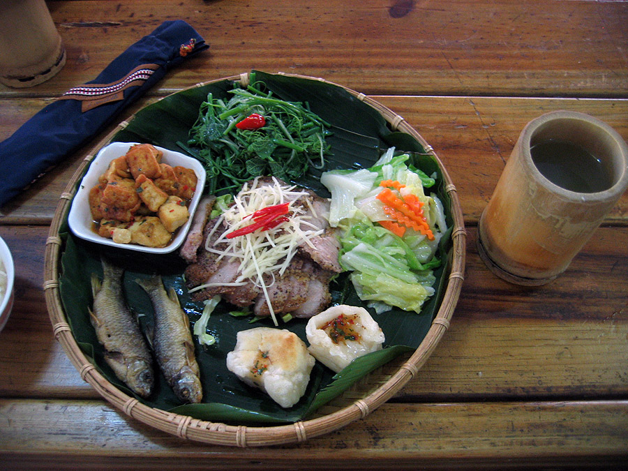

valgis
Valgiai.lt - ...ir šaukštas sriubos

Skip to content Valgiai.lt
Pradžia Sriubos Rimti patiekalai Grill / BBQ Padažai Patarimai Apie (projektą)Valgiai.lt
Pradžia Sriubos Rimti patiekalai Grill / BBQ Padažai Patarimai Apie (projektą) 22 Spa Rimti patiekalaiVištienos scarpariello su baravykais
by Regis Komentarų: 0 Jau esu minėjęs šie metai buvo turtingi baravykais. Ir aš tikiu, kad daugelio jūsų šaldikliuose ilsisi šie miško karaliai, sušaldyti tiesiog švieži bei laukia,... 16 Spa Mėsiškos sriubos Ypatingos sriubosOlandiška žirnių sriuba Snert
by Regis Komentarų: 0 Kartu su šildymo sezono pradžia prasideda ir žiemiškų sriubų sezonas. Sočių, tirštų, maistingų, kaloringų ir šildančių. Čia neprošal prisiminti ir skaldytus žirnius. Žirnių sriubą arba... 07 Spa Rimti patiekalaiCannelloni su miško grybais
by Regis Komentarų: 0 Cannelloni žino visi tai tokie dideli, vamzdelio formos makaronai, prikimšti įdaro ir užpilti padažu bei iškepti orkaitėje. Klasika. Įdarų irgi būna visokiausių įvairiausių nuo... 30 Rgs PadažaiRudeninis prieskonių mišinys
by Regis Komentarų: 0 Jeigu maistą gaminate dažnai ir įvairų ko gero pastebėjote dėsningumą: baziniai prieskoniai patiekaluose kartojasi. Nekalbu apie druską ar pipirus jie tartum savaime suprantami. Kalbu... 18 Rgs Daržovių sriubos Trintos sriubosTrinta marinuotų burokėlių sriuba
by Regis Komentarų: 0 Burokėliai yra labai šaunios daržovės, aš juos labai mėgstu. Tik jie turi vieną trukumą, gal net du juos lupant ir smulkinant jie yra labai... 14 Rgs Grybų sriubosBaravykų sriuba su perlinėmis kruopomis
by Regis Komentarų: 0 Šie metai pelnytai gali būti vadinami grybų metais. Ką ten grybų baravykų metais! Jų šiuo metu tiek, kad žmonėms net pabodo nesibaigiančios baravykų krepšių... 10 Rgs Daržovių sriubos Šiupiniai ir troškiniaiŠviežių pomidorų ir cukinijų sriuba su makaronais
by Regis Komentarų: 0 Rugsėjis jau įsibėgėjo: dienos akivaizdžiai trumpėja, saulė šildo visai švelniai, vakarai greit tampa vėsūs, o rytai drėgni ir žvarbūs. Tai primena apie šiltesnius drabužius... 07 Rgs Rimti patiekalaiKeptos įdarytos paprikos
by Regis Komentarų: 0 Prisipažinsiu nesu didis rugsėjo fanas. Rugsėjis yra mėnuo, kuris atima visus vasaros malonumus ir su pirmaisiais rūkais apgaubia rudenine melancholija. Dienos trumpyn, naktys šaltyn,... 30 Rgp PatarimaiVakuumatorius. Kam jo reikia?
by Regis Komentarų: 0 Vienas iš modernių virtuvės įrenginių yra vakuumatorius prietaisas, kuris yra kiekvienoje profesionalioje virtuvėje, bet dar gana retai sutinkamas mėgėjų tarpe. Tai nėra įrenginys, be... 21 Lie PatarimaiSvogūnų laiškų ir sūrio keksas
by Regis Komentarų: 0 Tai bus dar vienas receptas patarimas, kuris padės daugeliu gyvenimo atvejų. Dabar vasara, liepos mėnuo persivertė į antrą pusę ir daržai kupini žalumynų. Nesinori...Navigacija tarp įrašų
1 2 … 27Paieška
Kategorijos
Grill / BBQ Mintys ir naujienos Padažai Patarimai Rimti patiekalai Sriubos Daržovių sriubos Grybų sriubos Mėsiškos sriubos Saldžios sriubos Šaltos sriubos Šiupiniai ir troškiniai Skaidrios sriubos Sultiniai Trintos sriubos Ypatingos sriubos Žuvis ir jūros gėrybės Vieno puodo receptaiNaujausi įrašai
Vištienos scarpariello su baravykais Olandiška žirnių sriuba Snert Cannelloni su miško grybais Rudeninis prieskonių mišinys Trinta marinuotų burokėlių sriubaŽymos
agurkai aliejus avinžirniai bulvės burokėliai citrinos cukinija daržovės grietinėlė grybai jautiena jogurtas kiauliena kiaušiniai kopūstai krapai lašiša makaronai miltai moliūgai morkos mėsa paprika perlinės kruopos petražolės pienas pievagrybiai pomidorai poras prieskoniai pupelės ryžiai salieras sultinys sviestas svogūnai sūris vištiena vynas česnakai česnakas šoninė žalumynai žirneliai žuvis RSS - PostsValgiai.lt
...ir šaukštas sriubos Rašomas nuo 2016.04.13Posted by Jack  Read more
Read more  Comments (15)
Comments (15)  2020.10.27 08:01
2020.10.27 08:01